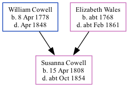

Susanna Eleanor Cowell 1808 - c1854
[ Home ] | [ Calendar ] | [ Surnames Index ] | [ Family History ]The daughter of William Cowell and Elizabeth Wales, Susanna Cowell, the first cousin four-times-removed on the mother's side of <a href="I1.html">Nigel Horne</a>, was born in St Peters, Thanet, Kent, England on Apr 15, 1808<span class="citation">1</span> and baptized there on May 29, 1808. On Jun 6, 1841, she lived on George Hill Road, St Peters, Thanet, Kent, England<span class="citation">6</span>. <p>She died <i>c.</i> Oct 1854 in Thanet<span class="citation">2</span> and was buried St Lawrence in Thanet on Oct 25, 1854<span class="citation">3,4,5</span>.
Parents
- William Castle was born on Apr 8, 1778
- Elizabeth was born c. 1768
Citations
- Kent, Canterbury Archdeaconry Baptisms - Findmypast
- England & Wales deaths 1837-2007 - Findmypast
- Kent, Canterbury Archdeaconry burials 1538-1988 - Findmypast
- England Deaths & Burials 1538-1991 - Findmypast
- England Deaths & Burials 1538-1991 - Findmypast
- 1841 England, Wales & Scotland Census - Findmypast (was age 33 and the daughter of the head of the household)
Media
Kent, Canterbury Archdeaconry burials 1538-1988 - GBPRS/CANT/D/95277267
England & Wales deaths 1837-2007 - BMD/D/1854/4/CM/000010/012
1841 England, Wales & Scotland Census Transcription - GBC-1841-0013965437
Kent, Canterbury Archdeaconry Baptisms Transcription - GBPRS-CANT-B-96346842
England Births & Baptisms 1538-1975 - R_883212376
England Births & Baptisms 1538-1975 - R_889840150
England Deaths & Burials 1538-1991 - R_277114399
Family Tree
Generated by Ged2Site. Last updated on Jul 20, 2025